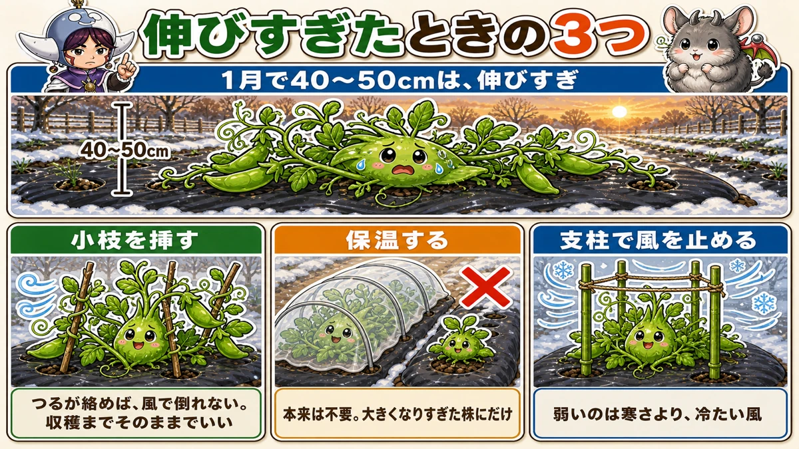
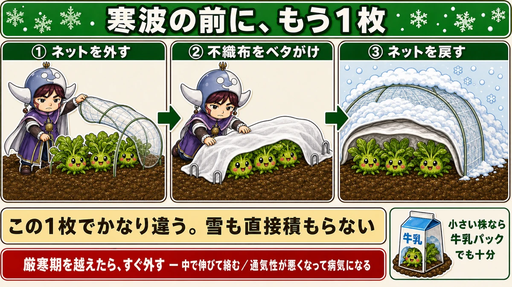
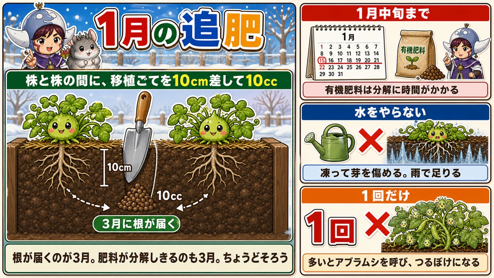
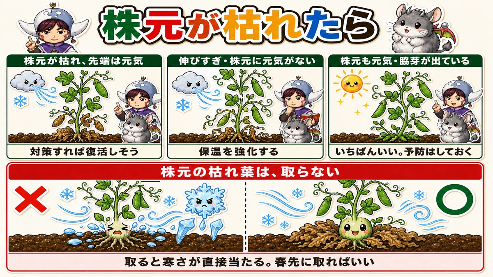
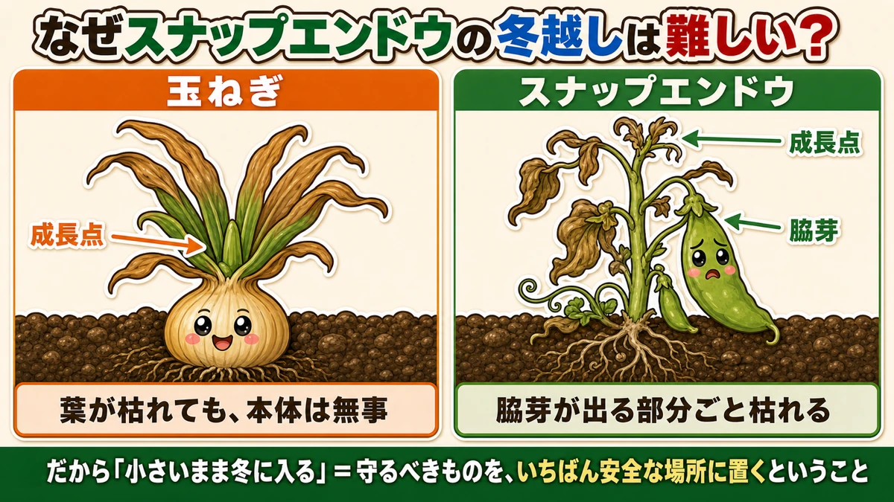

そら豆・スナップの冬越し判断帳｜伸びすぎ・黄変・春の立て直し
どうも、8150（えいこう）です🌱 家庭菜園歴8年、理科の教員免許を持っていて、有機・無農薬で野菜を育てています。
📖 この記事の目次
この記事で分かること
- 冬越しは『背丈』『先端の芽』『株元の芽』『風と土の湿り』を分けて見ると、次の作業を選びやすくなります。
- 年越しの背丈は10〜15cm前後がよく使われる目安。ただし、極端に小さく弱い苗まで、育てない方がよいわけではありません。
- 伸びたスナップは、つるを支えて先端を保護する方法から検討。そら豆の摘心を、そのままスナップへ当てはめません。
- 肥料の時期と回数には違う説明があります。冬に入れる方法と春から施す方法を、重ねて実行しないことが大切です。
- 葉が茶色くなっても、生きた芽が残れば回復を待つ選択肢があります。芽まで失った株には、苗の植え替えも考えます。
- 春は防寒を弱め、支えと風通しを整える時期。冬に役立った覆いを、収穫まで閉じたままにしないようにします。
そら豆とスナップエンドウ、秋にはかわいい苗だったのに、冬になると『伸びすぎ』『葉が黄色い』『倒れている』と、心配ごとが増えますよね。ここで全部の株に同じ手を打つと、元気な苗まで温めすぎたり、弱った苗へ肥料を重ねたりしがちです。
まずは、野菜を二つに分けます。そのあと、株を『適度な大きさ』『伸びすぎ』『小さく弱い』『傷んでいる』に分けてください。この順で整理すると、防寒するのか、支えるのか、芽を残して待つのかが見えてきます。
このページは、秋の準備から春の収穫まで、困った場面に戻って使う判断帳です。1〜2月の株を見ているみなさんは、『失敗の見分け方』からどうぞ。まだ植えていないなら『早見』と『作業の手順』が入口になります。全部を一気に覚えなくて大丈夫ですよ☺️
早見：そら豆・スナップの育て方（ひと目で分かる数字）
スナップエンドウの予定と寸法
- 秋の種まき：10月中旬〜11月下旬という説明があります。暖かい秋には遅めを検討する考え方もありますが、全国一律に日付をずらす方法ではありません。種袋の地域別の適期を先に見ます。
- 冬へ入る背丈：10〜15cm前後が中心の目安です。20cm程度までという説明もありますが、20cmならどの畑でも安全、という境界線には使いません。
- 種の数：1か所3粒の実演と、4粒程度の説明があります。冬の間は予備の苗を残し、春に元気なものを選ぶ考え方です。
- 種を埋める深さ：約2cmという実演があります。土をかけたら軽く押さえ、種と土をなじませます。過湿な土で、さらに水を足す手順にはしません。
- 株間：30〜40cmという説明、つるありは45cm程度とする説明があります。つるの性質と、仕立て方をそろえて選びます。
- うね幅：一列で50cmの実演、囲って仕立てる方法で60cmの説明、二列で70〜80cmという選択肢があります。二列の条間は材料に明示されていないので、数字を補って狭く詰めません。
- 発芽に適する温度：18〜20℃という説明があります。10℃程度でも発芽するが時間がかかる、という説明もあります。発芽日数を気温と切り離して決めません。
- 元肥：控える、または追加しない方法があります。一方、元肥を入れて始める栽培法もあり、前作の残りと肥料の性質が違います。
- 追肥：寒い時期に施して、その後の追加を控える方法と、2月下旬以降に施す方法があります。詳しい使い分けは『説明が分かれていること』へ。
- 春の間引き：一穴に元気な2本を残す例があります。冬の予備を残す期間と、春の混み合いを解消する期間を分けます。
- 春の背丈：つるなしでも80cm〜1m程度、つるありでは2m近くになる例があります。『つるなし』でも、倒れないための支えは考えておきます。
- 収穫：秋まきから翌春、5月ごろの収穫という説明があります。材料には全国共通の『種まきから何日』という数字はありません。
そら豆の予定と寸法
- 秋の種まき：10月中旬ごろから、または11月中旬までという説明があります。苗を使う説明では11月初め、11月後半の時点では種より苗を選ぶ考え方もあります。地域と品種の適期に合わせます。
- 冬へ入る背丈：10〜15cm程度、15cm未満という説明が中心です。本葉4〜5枚程度の苗を目安にする説明もあります。背丈と葉の充実を一緒に見ます。
- 種の向き：黒い筋のある部分を下、または斜め下へ向ける方法です。上端を少し出す方法と、全体を埋める方法があるため、深さは一つに決めつけません。
- 鉢の種数：一鉢に1粒という栽培例があります。鉢の寸法に不明瞭な記録があるため、このページでは最小の鉢径を指定しません。
- 株間・うね幅：今回の材料には、地植えのそら豆に一律に使える組み合わせがありません。品種の表示で確認し、春に枝が広がる場所と通路を確保します。
- 冬前の摘心：伸びすぎた苗で、本葉6枚目付近の先端を切る説明があります。小さい苗は春先まで待つ説明もあり、全株に行う作業ではありません。
- 追肥：1月〜2月初めに終える説明と、2月後半〜3月に施す説明が並存しています。冬の追肥日を、スナップと共通の一日に固定しません。
- 春に残す枝：多くて5本、6本前後、6〜8本、6〜10本など、栽培法によって違います。低いまま花が咲いた株で4本に絞る例もあります。
- 春の摘心：70cm程度、または70〜80cm以上でさやができ始めたとき、という説明があります。高さだけで切らず、花やさやと生育の勢いを確認します。
- 収穫：鉢栽培では4〜5月の例があります。秋から翌春までの栽培で、地域・品種をまたぐ一律の日数は示されていません。
二つの豆に共通する確認事項
- 連作：同じ場所でマメ科を続けない計画を立てます。材料には、安全を保証できる一律の休作年数はありません。枝豆のあとにスナップ、スナップのあとにインゲンという並びも、同じ仲間の連続です。
- 地植えの水：土に十分な湿りがあれば、雨を中心に管理する方法があります。極端に乾く土地では観察して調整します。
- 鉢の水：地植えと同じ間隔にせず、土の乾きと鉢の状態を見ます。小さな容器は、畑より水分条件が変わりやすいです。
- 防寒の終わり：3月中旬に覆いを外す例がありますが、その月を全国共通の終了日にはしません。地域の冷え込みと株の伸び方を見ます。
早見の数字は、まず計画を立てるための目安です。違う説明から、株間だけ、肥料だけ、支柱の時期だけを拾うと、全体のつじつまが合わなくなります。例えば、元肥を入れない方法の追肥と、元肥を入れる方法の追肥を足すと、もともとの予定より肥料が増えてしまいます。
- 野菜名と、つるあり・つるなしを確認した
- 種袋の地域別の適期を見た
- 種まき日、定植日、すでに入れた肥料を記録した
- 冬の目安の背丈と、現在の芽の状態を見た
- 春の支えと、覆いを外す作業まで予定に入れた
この五つを小さなメモに残しておくと、冬の相談ごとが整理しやすくなります。苗の身長だけで合否をつけるより、『いつから、どんな場所で育ったか』も分かる方が、次の手を選びやすいんですよね。
作業の手順（時期の順）
1．秋の計画は、冬の苗と春の場所を両方考える
- 種袋で野菜の種類、地域別のまき時、春の草丈を確認します。
- 前作を調べ、マメ科が続く場所を避ける候補を探します。
- スナップは、つるあり・つるなしに合わせて春の支えを置ける場所を決めます。
- そら豆は、枝を広げても通路へ出すぎない場所を確保します。
- 日当たり、寒風の通り道、雨のあとに水が残る場所を確認します。
『冬は小さく』という話だけを聞くと、小さいスペースでずっと育てられそうに感じます。でも冬の苗は、春の姿の縮小版というだけでもないんです。スナップのつるが伸びる空間、そら豆の枝が広がる空間は、最初から予定に入れておきます。
暖かい秋は、例年の種まき日でも育ちすぎることがあります。一方、遅らせすぎれば、寒くなるまでに十分な苗にならない場合もあります。『遅いほど正解』にはせず、地域の適期の中で、冬の背丈を意識して計画するのが出発点です。
購入苗にも同じ考え方を使います。売り場で一番背の高い苗が、冬越しの一番いい苗とは限りません。先端が元気か、茎が細く長くなりすぎていないか、植える時期に対して大きすぎないかを見てください。冬の準備では、背の高さがそのまま頼もしさにならないんですよね。
2．種をまく前に、土と肥料の履歴を確認する
- 前作で入れた肥料と、その野菜の育ち方を振り返ります。
- 土が湿りすぎていないか、乾いて粉のようになっていないかを見ます。
- 一列か二列かを決め、株間と作業する通路を確保します。
- 元肥を控える方法か、元肥を入れる方法か、採る栽培法を決めます。
- どちらの方法でも、別の方法の肥料を追加で上乗せしません。
元肥は、植える前に入れておく肥料です。ここで必要なのは、肥料の名前をたくさんそろえることより、すでに土にどれくらい残っているかを考えること。前作がよく茂った場所へ、何も入っていない新しい土と同じつもりで足すと、秋の伸びが強くなりすぎる可能性があります。
スナップを元肥なしで始める方法は、冬前の伸びすぎを抑える考え方とセットです。そら豆にも元肥を抑える説明がありますが、春の枝や実を育てる段階の養分まで、一切いらないと決まったわけではありません。『最初に控える』と『最後まで不要』は、別の話として扱います。
土が水浸しなら、種をまく前に水の逃げ道を整えます。逆に乾き切っているなら、その状態を無視して『冬は水をやらない』という合言葉だけで進めません。冬の管理は、暦と土の実物を一緒に見るところから始まります。
3．スナップの種をまき、発芽を確認する
- 栽培法に合わせて30〜40cm、つるありなら45cm程度という株間の目安を確認します。
- 一か所3粒、または4粒程度の方法から、使う品種の表示に沿って種数を決めます。
- 約2cmの深さへまく実演を参考に、土をかけて軽く押さえます。
- 土がすでに湿っていれば、さらに水を加える必要があるかを確認します。
- 発芽後は、苗の色と茎の伸びを見て、冬へ向かう大きさを記録します。
発芽が遅いと、つい土を掘って確かめたくなりますよね。まずは種まき日と気温を見直してください。暖かい条件の発芽日数を、寒い畑へそのまま当てはめないようにします。水が多い状態へ追加で水を入れることも、発芽を早める万能な手ではありません。
複数の苗を残す方法では、冬の間に傷む株が出ても、元気な株を選べる余地があります。ただし、これは春までぎゅうぎゅうに育てるための方法ではありません。『冬は予備を残す』『春は混み合う前に選ぶ』を、続きの作業として考えておきます。
4．そら豆の種・苗を、冬の大きさへつなげる
- 種まきか購入苗かを、地域の適期と残っている暖かさで選びます。
- 種からなら、黒い筋のある部分の向きと、かぶせる土の深さを種袋で確認します。
- 苗を使うなら、背丈と本葉の状態、先端の健全さを見ます。
- 植えてからは、主な茎と株元から出る芽を区別して観察します。
- 冬前に伸びすぎていなければ、切る作業を先回りして増やさず、大きさを見守ります。
そら豆の種は、向きと埋め方について複数の説明があります。『上端を出す』方法を見て、別の『全部埋める』方法が間違いだと即決する必要はありません。鉢と畑、土の湿り、種袋の指示をそろえて選びます。
先端を切る摘心は、伸びすぎた苗の救済として登場する作業です。まだ小さく、十分に育っていない苗へ、背丈をもっと低くするために行う作業ではありません。まず『伸びを止めたい株なのか』『まだ葉を育てたい株なのか』を分けてください。
5．冬の入口で、株を四つの状態に分ける
- 背丈が目安に近く、芽と茎がしっかりしている株を確認します。
- 目安より長くなり、先端が高い位置にある株を確認します。
- 極端に小さく、細く弱い株を確認します。
- 葉の黄変、先端の枯れ、株元の傷みがある株を確認します。
- それぞれに印や写真を残し、次に見たときの変化を比べられるようにします。
10〜15cmという数字は、畑で分類する助けになります。ただし、物差しだけで『15cmを少し超えたから失敗』と決める必要はありません。芽が元気か、倒れていないか、寒風が強いか、土が湿りすぎていないかも見ます。
同じ場所でも、苗を買って植えた株と、種から始めた株では成長がそろわないことがあります。全部に同じ厚さの覆いをかける前に、守りたい理由を整理しておくと、温めすぎを避けやすくなります。
6．伸びすぎたスナップは、倒れと先端の傷みを減らす

- つるが地面へ倒れ込んでいないか、折れや傷がないか確認します。
- 小枝などの取っかかりを株の周囲へ置き、つるを無理なく支えます。
- 冷たい風が直接当たる場所では、周囲を囲う防風を考えます。
- 先端が霜や寒さにさらされる株では、覆いの高さと保護する範囲を見直します。
- 覆ったあとも先端の色、土の湿り、内部の蒸れを観察します。
支えることと、温めることは別の目的です。枝を置いて倒れにくくしても、寒さの被害まで全部防げるとは限りません。逆に覆いだけをかけても、長いつるが風で揺れ続ければ傷むことがあります。どちらの困りごとがあるかを先に見ます。
40〜50cmへ伸びた冬のスナップを、支えと保温で救済する例があります。でも、その方法を、まだ小さい苗を早く伸ばすための標準管理へ置き換えません。すでに大きくなった株を守る作業と、冬前の大きさを整える作業は、目的が違います。
小枝へ絡んだつるを、春にきれいにしようとして無理にはがすと、茎を傷めることがあります。支えが安定していて作業の邪魔にならなければ、そのまま使う選択肢があります。見た目を整えるために、元気なつるを引っ張らなくて大丈夫です。
7．伸びすぎたそら豆の摘心は、残す芽を決めてから
- 主な茎の背丈と、葉の枚数、株元の脇芽を確認します。
- 伸びすぎを抑える目的なのか、春の枝を育てる目的なのかを決めます。
- 冬前の救済を行う場合は、本葉6枚目付近で先端を切る説明を、株の状態と照らし合わせます。
- 主な茎を切ったあと、代わりに育てる芽まで続けて取り除かないようにします。
- 小さい苗は無理に切らず、春先の生育を見て判断します。
摘心は茎の先端を切ること、脇芽は葉の付け根などから出る新しい芽です。どちらも『芽を取る』作業に見えますが、狙いが違います。主な茎の伸びを止めて脇芽に期待するなら、その脇芽は次の候補。ここで『冬の脇芽は全部取る』という別の方法を重ねると、育てたい場所まで減らしてしまいます。
そら豆の冬の管理には、主軸を残して脇芽を整理する説明もあります。一株にすべての切り方を盛り込まないようにしてください。切る前に、『この株は春にどの茎を伸ばす予定か』が言える状態にしておくと安心です。
8．防寒は、株の高さと観察できる頻度に合わせる

- 株数と背丈を見て、周囲を囲う方法か、上から覆う方法かを選びます。
- 小さい苗へ直接不織布をかける場合は、きつく張らず、押しつぶさない余裕を残します。
- 大きい株では、覆いが先端を押さえ続けないよう、支えや空間を確保します。
- 防虫ネットと覆いを重ねる方法では、固定のゆるみと、株にかかる重みを確認します。
- 寒さが緩んだ日は内部を見て、過度な生長や湿りすぎがないかを確認します。
不織布は、繊維を布状にまとめた覆いです。防虫ネットと同じ役目だけを持つものではありません。網で風を弱める、布で苗を保護する、ビニールで保温するという方法を、同じ性能の道具として扱わないようにします。
小さい苗の上へ、ふんわり覆う方法があります。一方、背が高い苗では直接かけた布が重しになり、茎を押してしまう場合があります。『使う資材が同じなら同じ掛け方でいい』とはせず、植物と覆いの間の空間も見てください。
ビニールで温める方法は、観察と換気まで含めて一つの作業です。小さく弱い株を育てる例では、目安の大きさに近づいたら覆いを切り替えています。温めたまま放っておく方法ではありません。畑へ行ける頻度も、選ぶ方法の条件に入れておきます。
9．冬の追肥は、記録を見てから必要性を判断する

- すでに入れた肥料と日付を確認します。
- 元肥を控える栽培法か、元肥を入れる栽培法かを確認します。
- 冬に施して春の効き目を待つ方法か、春から施す方法かを区別します。
- 実際に使う製品の成分、使用量、適する時期を確認します。
- 地植えか鉢かを分け、寒さで伸びが止まっただけの株へ追加を重ねません。
この時期は、肥料を入れても背丈の変化が見えにくいことがあります。そこで『効いてないんかな』と同じ作業を繰り返すと、あとから必要以上の養分が効く可能性があります。冬に伸びないことだけを、肥料不足の証拠にしないようにします。
図は冬の追肥を紹介するものですが、そら豆とスナップ、すべての土に同じ日付・同じ量を適用する指示としては使いません。本文で比較している前提を優先してください。容量で示された量と、重さで示された量も混ぜず、使う製品の表示を確認します。
10．1〜2月は、下葉より先に生きた芽を確認する

- 先端に緑色の芽が残っているかを見ます。
- 茎を株元までたどり、途中に折れや傷みがないかを確認します。
- 株元付近から新しい芽が出ていないかを探します。
- 茶色い葉だけなのか、茎や芽まで傷んでいるのかを分けます。
- 元気なつると、弱っているつるを見分けられるように印を残します。
先端だけが傷んだ株と、株元の芽まで傷んだ株では、春の見込みが違います。『葉が枯れた』という一言で、両方を同じ状態にしないことが大切です。下から芽が伸びているなら、その芽を守って待つ選択肢があります。
冬の枯れ葉の扱いは、病気の疑いと春の整理を分けて考えます。見た目が気になるからと、生きた茎ごと引っ張って片づけないようにしてください。病気らしい変色や広がりがある場合は、寒さだけと決めつけず、症状の確認を優先します。
11．回復が難しい株には、春の苗を用意する
- 先端と株元の芽の両方を確認し、残っている生育場所を探します。
- 芽がなく、株全体が枯れている場合は、植え替え用の苗を検討します。
- 種から育て直すなら、春まきに対応する品種と地域の適期を確認します。
- 購入苗を植える場合は、根をほぐしすぎず、急な環境変化にも注意します。
- 春苗を植えたあとも、まだ寒い時期は必要な保護を続けます。
春に植え直す方法でも収穫を楽しめる、という説明があります。秋まきで冬を越した株と、同じ収量になる保証はありませんが、畑が全部空いたら終わり、というわけでもありません。ここは安心して、別の入口を考えてよいところです。
苗の根が絡んでいるときに、一本ずつ分けようとして強く引っ張ると、根を傷めます。複数本の苗をそのまま植え、春に元気なものを選ぶ例があります。植えた直後の下葉の傷みだけで判断せず、先端の緑とその後の伸びを確認してください。
12．春の伸び始めに、間引きと支えへ切り替える
- 寒波の見込みと内部の温度・湿りを見て、防寒の覆いを弱めます。
- スナップは元気な苗を選び、混み合ったまま伸び続けないよう整理します。
- すでに絡んだ株は引き抜いてほどこうとせず、残す茎を傷めない方法を選びます。
- つるありにはつるを受ける設備、つるなしには倒れを防ぐ囲いや支えを整えます。
- そら豆は育てる枝を選び、枝が外へ倒れないよう支えを補います。
誘引は、伸びる茎やつるを支えへ案内する作業です。つるがびっしり絡んでから設備を作るより、伸び始めの段階で準備する方が作業しやすくなります。すでに使っているひもも、たるみや支柱のぐらつきを確認します。
防寒の網と、つるを育てるための網を区別してください。春に外すのは、温めすぎや蒸れの原因となる覆いです。株を支えている設備まで全部撤去すると、今度は倒れや折れが問題になります。冬の道具を片づけるときは、一本ずつ役目を確認しておきます。
13．花が咲いたら、水・虫・さやの状態を見直す
- 先端、葉裏、株の内側にアブラムシがいないかを見ます。
- 混み合った下葉や弱い枝を確認し、風が通る空間を整えます。
- さやが育つ時期は土の湿りを確かめ、乾燥を放置しないようにします。
- そら豆は背丈だけでなく、花とさや、生育の勢いを見て春の摘心を考えます。
- スナップはつるを支え直し、花や茎が風で振り回されないようにします。
そら豆は先端の中心に虫が入り込むことがあるので、葉の表面を遠くから見るだけでは見落としやすいです。冬に目立たなかった虫も、暖かくなる時期には注意します。見つけたら個体数を減らし、その後も同じ場所を確認してください。
さやが膨らまないときも、肥料だけの問題と決めません。春の乾燥、株の混み合い、虫、支え不足による傷みなどを一つずつ見ます。冬の『水を控える』管理を、実が育つ春までそのまま延長しないことも大切です。
14．収穫と片づけを、次の作物につなげる
- スナップはさやの膨らみとつやを見て、硬くなりすぎる前に収穫します。
- そら豆はさやの向き、膨らみ、筋の色を合わせて食べごろを判断します。
- 新しい花が減る、全体の黄変が進むなど、株の終盤の変化を見ます。
- 病気が疑われる株は、片づけを長く先延ばしにしないようにします。
- 土中の根や虫を確認し、次のマメ科を同じ場所へ続けない計画を立てます。
スナップは3日に一度程度の見回りで収穫する例がありますが、気温や伸び方によって変わります。暦の間隔だけでなく、さやの実物を見てください。薄いものはまだ若く、育ちすぎたものは皮や豆が硬くなることがあります。
そら豆は収穫後に鮮度が落ちやすいため、食べる予定に合わせて採ります。材料には、豆を取り出して食品用の袋へ入れ冷凍する例がありますが、保存できる期間を一律には決められません。大量に採る前に、食べる量と保存の段取りを考えると無駄を減らせます。
後作にきゅうりやゴーヤを選ぶ例があります。ただし、地域の植え付け適期まで残っているか、病気や虫を持ち越さないかを確認します。豆が終わった土なら肥料が十分、という保証はありません。次の作物に必要な土の状態を、改めて見直してから進めます。
失敗の見分け方（症状→原因→やること）
冬なのに背丈がどんどん高くなる
- 症状：スナップのつるが長く伸びる、そら豆の主な茎が冬の目安を超える、覆いの中で苗が急に大きくなる。
- 考えられる原因：暖かい秋、早い種まき、大きい購入苗、養分が多い土、早い時期からの強い保温などです。
- やること：種まき日と肥料の記録を確認し、覆いの中の状態を見ます。スナップは倒れと先端を守る方法を検討。そら豆は残す芽を確認してから摘心を考えます。
『大きくなったから、もっと強い苗になった』とは限らないのが冬越しの難しいところです。ただ、長くなった株を見て、いきなり全部切る必要もありません。まず野菜名を分け、茎が元気かどうかを確認します。
すでに長くなった株への救済と、小さい苗を長くしない管理は分けます。前者は保護が必要な場合があり、後者は保護のしすぎが問題になる場合があります。同じ畑でも、株ごとに対応が違ってよいんです。
つるが地面へ倒れて、風で揺れている
- 症状：長いつるが横へ広がる、地面へ貼りつくように倒れる、風のたびに先端が振られる。
- 考えられる原因：絡む場所が足りない、支えが低い、ひもがたるんでいる、強い風を直接受けているなどです。
- やること：折れを確認し、小枝や支えを足して茎を安定させます。長いつるを強く起こしたり、絡みを無理にほどいたりしません。
肥料を足しても、つるを受ける場所がない問題は解決しません。背丈と同じくらい、いまどこで体を支えているかを見てください。春に使う設備を一気に完成させる前でも、倒れ続ける状態を減らす応急処置は考えられます。
下の葉が茶色いが、先端は緑色
- 症状：下葉が枯れたように見える一方、先端の芽に緑色が残っています。
- 考えられる原因：寒さによる下葉の傷みや、移植後の環境変化などが候補です。葉だけの観察では、原因を一つに確定できません。
- やること：先端から株元へ茎をたどり、生きた部分と傷んだ部分を区別します。芽が残っていれば、保護しながら変化を観察します。
下葉一枚の色を、株全体の寿命と同じにしないことが大切です。『汚いから取る』という見た目の整理を優先すると、残すべき茎まで傷めることがあります。葉が自然に乾いた状態か、湿って崩れる状態か、周囲へ広がっているかも見ます。
春の風通しを改善するための葉の整理と、厳寒期の株元を守る管理は目的が違います。月が変わっただけで機械的に片づけるより、寒さと湿り、株の伸びを一緒に確認してください。
先端が黄色く、下から新しい芽が出ている
- 症状：長い茎の先端は黄変していますが、株元付近に小さい緑の芽があります。
- 考えられる原因：伸びた先端が寒さで傷み、残った芽から育ち直している可能性があります。
- やること：新しい芽を折らないよう保護し、伸びているかを記録します。黄変した先端だけを見て、株全体を抜きません。
ただし、緑の芽が一つ見えれば必ず元通りになる、という保証もありません。残った芽の伸び、その後の寒さ、株元の健全さを見ていきます。元気な芽に目印をつけると、つるが混み合ったときにも判断しやすくなります。
先端も株元も枯れ、新しい芽が見つからない
- 症状：上の芽だけでなく、株元の芽も傷み、生きた芽を探しても見つからない状態です。
- 考えられる原因：強い寒害、茎や根の不調などが候補です。株全体が枯れた場合は、春の回復を待つだけでは難しいことがあります。
- やること：生きた芽の有無をもう一度確かめ、苗の植え替えや適期に合う再播種を考えます。追加の肥料だけで回復させようとしません。
『抜かずに待つ』という対応が役に立つのは、回復の入口が残っている場合です。その入口を失った株まで、同じ見込みで待ち続ける必要はありません。見回りでは、葉の色の次に『次に伸びる場所はあるか』を探してください。
新しい苗を用意するのは、冬越しがうまくいかなかったときの立て直しです。秋まきの結果と春苗の結果を同じ記録にせず、植え直した日を残すと、収穫時期の違いも分かりやすくなります。
小さいまま、葉や茎も弱々しい
- 症状：背丈が低いだけでなく、茎が細い、葉が十分育っていない、寒さに当たって傷みが進む状態です。
- 考えられる原因：遅い種まき、生育期間の不足、根や水分の不調、土の養分条件などがあります。
- やること：土の湿りと苗の健全さを確認し、必要なら生育を助ける保護を検討します。温める場合は、伸び方を見て覆いを切り替えます。
『小さいほどよい』をそのまま受け取ると、弱い苗までずっと小さく保ちたくなります。でも目指すのは、冬の大きさに合い、葉や芽がしっかりした苗です。小さくても元気な株と、小さくて弱い株は分けてください。
肥料不足という説明がある症状でも、今から追肥すれば解決するとは限りません。必要だった時期を過ぎている場合や、根の不調がある場合もあります。原因の候補と、いま有効な作業を分けて考えます。
土は湿っているのに、葉に元気がない
- 症状：土の表面が湿っている、雨のあと水が残る、苗がしおれたように見える状態です。
- 考えられる原因：寒さ、根の不調、過湿、茎の傷みなどが候補です。しおれた見た目だけでは水不足と決められません。
- やること：地表だけでなく、根の周りの湿りと水の逃げ道を確認します。濡れた土へ水を追加する前に、排水と株の傷みを見ます。
冬は生育がゆっくりなので、夏と同じつもりで水を入れると、多すぎる場合があります。一方、雨が当たらない鉢や乾きやすい場所なら、冬でも乾燥します。『水やりなし』と『毎日水やり』の二択にせず、土を見て決めてください。
春に葉ばかり伸び、花やさやが少ない
- 症状：つるや葉の勢いはあるのに、期待したほど花やさやがつきません。
- 考えられる原因：養分の偏りや与えすぎ、品種と植え時の違い、環境条件、株の傷みなどです。
- やること：施肥の履歴を確認し、花が少ないという理由だけで肥料を足しません。苗の由来、植えた日、葉の健全さも確認します。
つるや葉ばかり育って実つきが弱い状態は、『つるぼけ』と呼ばれます。葉が多いから全部元気、とも限らないんですよね。食べたい部分はさやや豆なので、茎葉の勢いだけで栽培の成果を判断しないようにします。
寒さと開花の関係にも、材料には異なる説明があります。花がつかない株を見て、すぐ『寒さが足りなかった』と一つに決めつけないことが大切です。いま見える症状と、過去の育ち方をセットで振り返ります。
先端や葉裏に、小さな虫が集まっている
- 症状：そら豆の先端の中心、葉裏、株の内側にアブラムシが見られます。スナップでも芽の周囲を確認します。
- 考えられる原因：見落とした虫が残っている、春の気温上昇とともに増えている、混み合って観察しにくくなっているなどです。
- やること：先端と葉裏を近くで見て、見つけた虫を取り除きます。密集した場所の風通しを見直し、日を置いて再確認します。
一度きれいにしたから終わり、とは考えない方が安心です。葉の中心へ入り込んだものを見落とす場合もあります。葉や芽を傷めないように扱い、同じ場所を繰り返し見ることが、早めの発見につながります。
ここでは自作の散布液や温水の処方を載せません。配合、接触時間、植物への影響が確かでない方法を、冬の弱った株へ一律に使う根拠がないためです。薬剤を使う場合は、対象の作物と害虫に合う製品の表示を確認します。
春の覆いの中で、つるが絡み葉が混み合う
- 症状：つるが防寒用の網へ入り込む、中が蒸れる、下葉や弱い枝が重なって見えにくくなります。
- 考えられる原因：防寒を続けすぎた、誘引や間引きが遅れた、支えのひもがたるんだなどです。
- やること：寒さの見込みを確認し、不要になった覆いを弱めます。残す茎を支え、絡んだ網を強く引かず、傷めない順で整理します。
春の片づけで一番避けたいのは、元気に伸びたつるまで網と一緒に引っ張ることです。外す前に、どこが絡んでいるかを見てください。株が大きくなるほど、支えと覆いの役目を分けておくことが効いてきます。
花は咲いたのに、さやが十分膨らまない
- 症状：そら豆のさやが期待した大きさにならない、スナップの株が黄変して次の花が減ってきます。
- 考えられる原因：春の乾燥、枝やさやの多さによる養分の分散、虫や病気、収穫の遅れ、栽培の終盤などです。
- やること：土の湿り、葉の状態、枝の混み合い、さやの育ちを順に見ます。採れるものを適期に収穫し、弱っている原因を分けます。
冬の寒害と春の乾燥では、必要な作業が変わります。同じ黄色い葉でも、時期によって確認する順番が違うわけです。『黄色いから追肥』の一手にまとめず、土と芽、虫、支えを見てから判断してください。
説明が分かれていること
防寒は標準で用意するのか、必要な株だけなのか
- Aという説明：冬越しの設備として、周囲の囲い、布を重ねる覆い、小苗への直接の覆いを準備します。
- Bという説明：地域によっては通常の苗は防寒なしでも越せるとし、寒い場所や伸びすぎた株などに保護を加えます。
- どう考えればよいか：畑の気温、風、苗の大きさがそろった比較ではありません。『何も要らない』も『必ず厚く覆う』も、全国共通のルールにはしません。
まず地域の冬の条件と、株の実物を確認します。近くの同じような環境の栽培例は参考になりますが、風の通り道や苗の高さが違えば、必要な保護も変わります。小苗を保つ方針が同じでも、防寒の標準装備まで一致しているわけではありません。
保温は伸びすぎを招くのか、救済になるのか
- Aという説明：早い時期から覆うと生育が進むため、暖かい秋の保護を早めすぎないようにします。
- Bという説明：すでに大きく伸びた株は、先端を守るために保温を強めます。極端に小さく弱い苗を育てるために温める説明もあります。
- どう考えればよいか：『伸ばしすぎない』『長い先端を守る』『弱い小苗を育てる』という目的の違いです。覆いの種類だけで正解を決めません。
迷ったときは、いま温める理由を一文で書いてみてください。『小さな苗を冬の大きさまで育てたい』なら、大きくなった後の切り替えが必要です。『すでに長い先端を傷ませたくない』なら、先端の保護と蒸れの確認が必要になります。かけ始めの理由が違うと、外す判断も変わります。
スナップの追肥を冬に終えるのか、春から行うのか
- Aという説明：元肥を控え、12〜1月などの寒い時期に施して春へつなぎ、その後の追加を控えます。やり忘れた場合は2月初旬の早い段階まで、という説明もあります。
- Bという説明：厳寒期の1月は避け、2月下旬、3月中旬などに施す方法があります。
- どう考えればよいか：元肥の有無、肥料の効き方、土の条件が違います。二つの予定を足して、冬も春もすべて行う計画にはしません。
回数だけを比べると、少ない方が正しい、多い方が手厚い、と判断したくなります。でも回数の前に、『何がすでに入っているか』があります。冬に施す方法を採っていたなら、春に伸びが弱いという理由だけで、別の方法の追肥を追加しないようにします。
そら豆の追肥も、同じ月へ統一できるのか
- Aという説明：1月〜2月初めに追肥を終える考え方です。
- Bという説明：2月後半〜3月に一度施す方法や、鉢栽培で3月に施す例があります。
- どう考えればよいか：そら豆ならこの日、と決める材料はありません。畑と鉢、前作の養分、使う肥料、株の育ちを分けます。
スナップとそら豆はどちらもマメ科ですが、それだけで同じ施肥計画にはなりません。そら豆の春の枝や大きい豆を育てるために養分を考える説明もあります。『豆だから肥料不要』という一言にまとめず、栽培法全体で見ます。
冬に支柱を立てるのか、春まで待つのか
- Aという説明：冬の防風のため、支柱で周囲を囲い、株が倒れないようにします。
- Bという説明：冬前から高く誘導すると伸びすぎや霜の被害につながるため、本格的な支柱を年明け以降に整えます。2月からという説明もあります。
- どう考えればよいか：防風の囲いと、つるを高く伸ばすための支持設備を区別します。『支柱は3月』という一律の開始日にはしません。
支柱という同じ道具でも、囲いの骨組みにするのか、つるを上へ誘導するのかで働きが違います。株が風で倒れているなら、設備の開始月だけを守るために放置する必要はありません。一方、小さい苗を早く高く誘導するために、冬の設備を増やすのとも違います。
伸びたスナップを摘心するのか、切らずに保護するのか
- Aという説明：主なつるをなるべく残し、防寒で乗り切ることを優先します。脇芽からの収穫は、主なつるより少なくなる可能性があるという考え方です。
- Bという説明：伸びたつるを切り、下からの芽を育てる救済例があります。保温と摘心を比べて試す、という説明もあります。
- どう考えればよいか：比較を始めるという話は、結果の報告ではありません。『切れば同じ収量に戻る』『切ることは一切できない』のどちらにも決めつけません。
スナップで切る判断は、そら豆の冬の摘心とは分けてください。元気な主づるが残っているなら、先に支えと保護で守れるかを考えます。芽が傷んでいる株では、どこに生きた芽が残っているかを確認してから、残す場所を判断します。
そら豆の脇芽は、冬に取るのか、育てるのか
- Aという説明：冬の通常管理では、主な茎を残して脇芽を整理します。
- Bという説明：伸びすぎた主な茎を切り、脇芽を春の枝として育てる方法があります。春が近づいてから芽を伸ばす説明もあります。
- どう考えればよいか：通常株と救済株、冬の生長抑制と春の枝づくりを分けます。主な茎を切る方法へ、脇芽を全部取る方法を重ねません。
春に残す枝数にも、5本まで、6本前後、6〜8本、6〜10本などの差があります。これは全部を平均して『7本が正解』にする数字ではありません。品種、株の勢い、枝の太さ、育てる空間が違うためです。低い株で早く花が咲いた場合の4本残しも、通常株へそのまま広げません。
間引きは、冬の終わりか、暖かくなってからか
- Aという説明：寒さで枯れる苗が出る可能性を見込み、冬は予備を残して暖かくなってから選びます。
- Bという説明：つるや根が絡む前に、冬の終わりまでに間引きを進めます。
- どう考えればよいか：早すぎると予備がなくなり、遅すぎると残す株まで傷めやすくなります。月だけで決めず、寒さと絡み具合を確認します。
今の株がまだ分かれて見えるか、つるが隣の株へ絡んでいるかを見てください。絡んでしまったものを強く抜くと、元気な株も一緒に揺らします。冬の保険として残した苗を、春の混み合いにしないところが、この作業の区切りです。
寒さに当てなければ、花は咲かないのか
- Aという説明：冬の低温と、春の花芽や収量を関連づけます。
- Bという説明：そら豆とエンドウ類を分け、エンドウ類は暖かくなれば開花するという説明があります。
- どう考えればよいか：品種や必要な低温の期間、開花と多収の違いをそろえた比較ではありません。『寒さゼロなら絶対に咲かない』という断定にしません。
このため、防寒をしてはいけない理由を、開花の話一つに押し込めないようにします。冬前の伸びすぎを避けたいことと、傷んだ株を保護したいことは両立する課題です。保温の程度と期間を調整する話として扱います。
枯れ葉を残すのか、株元をきれいにするのか
- Aという説明：冬の傷んだ株では、株元を寒さから守ることを重視します。
- Bという説明：春の生育期は、下葉や弱い枝、雑草などを整理して風通しを良くします。冬の終わりにも完全に枯れた部分を整理する説明があります。
- どう考えればよいか：季節と株の状態が違います。枯れ葉を永久に残す指示にも、茶色いものを今すぐ全部取り除く指示にもしません。
葉を外す際は、生きた茎まで引っ張らないことを優先します。病気が疑われる葉を、保温のためという理由だけで置き続けるのも別の問題です。乾いた下葉の傷みなのか、広がる変色や腐りなのかを分けて観察します。
収穫後の土には、元肥がいらないのか
- Aという説明：スナップの撤去後、うねを整え、元肥を追加せずに後作へ進む方法があります。
- Bという説明：片づけて耕したあと、次の作物に必要な肥料を入れる方法があります。
- どう考えればよいか：残った養分の量を測った比較ではありません。豆のあとなら十分な窒素が必ず残る、と保証しません。
撤去の時期も、5月中旬の例と5月下旬〜6月上旬の例があります。地域や気温、株の状態によって違うため、病気の株を予定日まで残す必要はありません。次の野菜の適期と、その場所の土を見て決めます。
よくある質問
10〜15cmより大きい株は、もう失敗ですか
その数字だけで失敗とは決めません。先端と株元の芽、茎の傷、風の強さを確認します。伸びたスナップには支えと保護、そら豆には状態に応じた摘心という選択肢があります。冬を越せるという保証ではありませんが、作業を選ぶ余地はあります。
小さい苗なら、防寒しなくても大丈夫ですか
小さいだけで安全とは言えません。茎が細く弱い株や、寒風が強い場所では保護が必要になる場合があります。背丈と葉の充実を一緒に見て、地域の冬の条件に合わせます。
スナップとそら豆を、同じ日に摘心してよいですか
二つを同じ作業へまとめません。そら豆には伸びすぎを抑える摘心の説明がありますが、スナップでは主なつるを残して守る方法が優先される説明もあります。野菜名と、切る目的を先に確認してください。
先端が枯れたら、株ごと抜きますか
まず株元に生きた芽がないかを探します。下から芽が伸びていれば、そこを守って待つ方法があります。先端も株元も枯れ、芽が残っていない株では、苗の植え替えを検討します。
冬に背丈が伸びないので、肥料を足すべきですか
伸びないという一点では判断しません。気温、土の湿り、根や芽の状態、すでに入れた肥料を確認します。追肥の予定を終えている株へ、見た目が変わらないたびに追加しないようにしてください。
図にある追肥量を、そのまま使えますか
図は一つの栽培法の説明として見てください。使う肥料、株数、鉢か畑かが違えば、そのままの量を適用できません。容量と重さを換算せず、製品の表示と採っている栽培法を確認します。
冬の水やりは、完全に止めてよいですか
湿った地植えで追加の水が不要な場面と、乾きやすい鉢や雨の当たらない場所を分けます。日付だけで止めず、土を確認してください。春にさやが育つ時期には、乾燥の見直しも必要です。
つるなしスナップにも、支えが必要ですか
必要になる場合があります。つるなしでも80cm〜1m程度へ育つ例があり、囲いや支えで倒れを防ぐ方法があります。つるありのように高く絡ませる設備と、株を受け止める支えは区別します。
防虫ネットは、春もそのまま使えますか
防寒のために使っている網は、春の温めすぎや絡みの原因になり得ます。冷え込みと株の伸びを見て外す時期を判断します。つるを支えるための設備は、別に残す必要があります。
春に苗を植え直しても収穫できますか
春の購入苗や育て直した苗で、収穫を楽しむ方法があります。品種の適期を確認し、根を傷めずに植えて、残る寒さへ対応します。秋まきの越冬株と同じ収量になるとは決めません。
プランターでも冬越しできますか
鉢栽培の例はあります。ただし、地植えの水や肥料の量をそのまま使わず、容器の土の量と乾き方を見ます。春の枝やつるを支える設備まで、置ける場所を確認して始めてください。
アブラムシは、春になってから見れば十分ですか
冬の先端に見られる説明があるため、冬から確認します。特にそら豆は先端の中心と葉裏を見てください。一度取り除いて終わりにせず、暖かくなる時期も同じ場所を見直します。
一穴に何本残せばよいですか
スナップでは春に元気な2本を残す例があります。冬の予備を残す段階と、春の混み合いを減らす段階を分けます。そら豆の枝数とは意味が違うので、『一穴の苗の本数』と『一株から出る枝の本数』を混同しません。
そら豆の枝数は、6本でそろえるべきですか
6本前後は一つの目安ですが、5本まで、6〜8本、6〜10本などの説明があります。株の勢いと枝の太さ、育てる空間で判断します。低いまま花が咲いた株の4本残しも、全株共通の指示ではありません。
収穫までの日数は、何日で計算すればよいですか
今回の材料では、品種や地域をそろえた日数は示されていません。秋まきから翌春の収穫という季節の目安を使い、具体的な日数は種袋で確認します。最後はさやの膨らみなど、実物で食べごろを判断してください。
豆を育てたあとに、枝豆を植えてよいですか
同じマメ科が続くので、別の場所を候補にします。耕すだけで連作の心配が必ずなくなる、とは言えません。後作の適期、前作の病気、土の状態まで確認して決めます。
学ぶ：冬越しと春の回復のしくみ🔬
葉の色と、次に伸びる場所は別に見る

植物を見て『生きているかな』と考えるとき、いちばん目につくのは葉の色です。でも、春の回復を考えるなら、新しい葉や茎を作る場所にも注目します。茎の先端にある生長の中心を、成長点と呼びます。脇芽は、別の茎へ育つ候補です。
例えば、上のつるが傷んでいても、下に緑の芽が出ているスナップなら、その芽の伸びを観察できます。一方、葉の一部に緑が見えていても、先端と株元の芽が傷んでいるなら、同じ見込みでは考えられません。色と芽の場所を、二つの情報として集めるわけです。
ここで注意したいのは、『芽は全部上にあるから、茎が傷んだら必ず再生しない』と単純化しないことです。実際の材料には、株元から芽が出て立て直す説明があります。守る場所を探すことと、葉一枚で株全体を判定することを分けてください。
摘心は、育てる場所を変更する作業でもある
先端を切ると、その茎は同じ先端から伸び続けることができなくなります。そら豆では、長い主な茎を切り、脇芽を伸ばして春の枝を育てる方法があります。だから摘心は、単に身長を縮めるだけの作業ではありません。
『今後どの芽を育てるか』を変える作業でもあるんです。主な茎を切って脇芽に期待するなら、脇芽を残すことが計画の一部になります。別の栽培法で脇芽を切る説明を見ても、そこで全部取り除くと、元の計画と合わなくなります。
スナップの主なつると脇芽については、収量に差があるという説明もあります。ただし、具体的に何割違うという確定値はありません。切ったあとに芽が出る可能性と、同じ収穫が戻る保証は、分けて考えます。
防風と保温は、同じようで役目が違う
風で茎が振られると、倒れたり折れたりする問題があります。支えは、茎の動きを小さくするための道具です。周囲の囲いは、株へ直接当たる風を弱めるために使います。上の覆いは、苗を保護し、内部の環境も変えます。
だから、『枝を足した』『布をかけた』『支柱を立てた』という作業名だけで、防寒が済んだとは判断しません。茎が安定しているか、先端が守られているか、覆いの中で湿りすぎていないかを別々に確認します。
同じ布でも、地面へきつく張るのか、苗の上へ余裕をもってかけるのか、枠にかけるのかで、植物への当たり方は変わります。道具の名前を覚えるより、『何から、どの場所を守りたいのか』が分かる方が応用しやすいですね。
冬に肥料を入れる日と、株が使う時期はずれる
肥料は、入れた瞬間に全部が植物へ移るわけではありません。使う肥料の性質や土の条件によって、利用できるようになるまでの過程が違います。寒い時期に施し、春の生育へつなぐ方法は、この時間差を見込む考え方です。
ただし、何月に入れれば必ず何月に効く、とカレンダーだけで固定はできません。土の温度や湿り、肥料の成分などが違うためです。冬の背丈が変わらないことを、肥料が消えた、量が足りなかったという証拠にはしません。
根粒菌の働きについても、豆なら養分をいくらでも自分で確保できる、という理解にはしない方がよいです。材料では、その働きによる窒素の供給を考える説明と、そら豆の春の生育には養分を補う説明が並んでいます。植物の仲間だけで、土と肥料の判断を終えないようにします。
同じ道具の役目が、季節で変わる
冬は、傷みを減らして生きた芽を残すことが大事です。春は、その芽を伸ばし、葉に光が届くこと、風が通ること、つるや枝が安定することが大事になります。季節が進むと、管理の中心も変わります。
冬の覆いが役立ったからといって、春も閉じたままならよいとは限りません。保温で生長が進む一方、混み合いや絡みが増えて、片づけの際に茎を傷める場合があります。よい道具ほど、使い終わりの判断まで必要になるんですよね。
逆に、春の風通しの話を聞いて、厳寒期の傷んだ株をすぐむき出しにするのも同じではありません。『守る段階』『伸ばす段階』『さやを育てる段階』を分けて考えると、作業がつながって見えます。
観察は、条件をそろえて比べると分かりやすい
理科らしく楽しむなら、切る実験や肥料の追加を増やす前に、記録から始めてみてください。苗をいじらなくても、学べることはあります。
- 同じ株に印をつけ、日付と背丈を記録します。
- 先端の色、株元の芽、倒れ、土の湿りを簡単に書きます。
- 覆いを変えた日、風が強かった日、寒い日の前後を残します。
- 次の見回りで、新しい葉や芽が増えたかを比べます。
- 別の株と比較する場合は、種まき日や苗の由来も確認します。
例えば、購入苗だけ背が高い場合、覆いの効果だけでは説明できないかもしれません。種まき日も覆いも違う二株を見て、『この布なら必ず強くなる』とは結論づけないようにします。目の前の観察を、条件つきの発見として残すのがコツです。
お子さんと見るなら、『どこから次の葉が出ている？』『前に黄色かった場所はどうなった？』と探してみるだけでも面白いです。株を引き抜いて根を比べなくても、芽と茎を追う観察はできます。冬の畑は静かに見えますが、同じ場所を続けて見ると、小さな変化がちゃんと見えてきますよ🌱
まとめ
そら豆とスナップの冬越しは、『何月だからこの作業』に、株の実物の情報を足して判断します。背丈だけでなく、先端と株元の芽、倒れ、風、土の湿りを見ると、必要な手が絞れてきます。
- 冬の目安は10〜15cm前後。ただし、小さく弱い苗まで育てない方針にはしない。
- 伸びたスナップは支えと先端の保護を検討し、そら豆の摘心をそのまま当てはめない。
- そら豆を摘心するなら、春に育てる芽を先に確認する。別の方法の脇芽取りを重ねない。
- 追肥は元肥と製品、土の条件をセットで考える。冬の方法と春の方法を足し合わせない。
- 黄変した葉だけで抜く判断をせず、生きた芽を探す。芽まで失った株には植え替えを考える。
- 春は覆いを見直し、支えと風通し、水分と虫の観察へ管理を切り替える。
困ったときの確認順は、次の四つです。
- どちらの野菜で、いつから育てた株かを確かめます。
- 次に伸びる芽が、どこに残っているかを見ます。
- 寒さ、倒れ、土の湿り、虫を分けて調べます。
- その原因に合う作業を選び、日付を残して変化を観察します。
同じ畑でも、守って待つ株、支えを足す株、植え替える株があって大丈夫です。全部を同じ姿にそろえるより、それぞれの生きた芽を見て判断する方が、春へつなげやすくなります。
今日ひとつだけやるなら、葉の色を見たあと、株元へ目を移してみてください。小さな芽が見つかれば、次に守りたい場所が分かります。見つからなければ、苗を用意する計画へ進めます。『なんとなく心配』から『今はこれをしよう』へ変えられると、冬の見回りもちょっと気楽になるかなと思います☺️
ここまで読んでくださって、ありがとうございます！ みなさんの畑の状態に合うところを選んで、春の豆へつなげていきましょう。
スナップエンドウのタネ（つるなし）
まだ間に合う地域もあります。つるなしなら支柱4本で済み、草丈1mほど。年内に10〜15cmの小さい株にしておくのが、冬越しの正解です。大きく育てすぎないでください。
![[商品価格に関しましては、リンクが作成された時点と現時点で情報が変更されている場合がございます。]](https://hbb.afl.rakuten.co.jp/hgb/552615f0.9cc2855e.552615f1.776f7de9/?me_id=1251188&item_id=10000610&pc=https%3A%2F%2Fthumbnail.image.rakuten.co.jp%2F%400_mall%2Fyonezawa%2Fcabinet%2Ftane01%2F10mame%2Fhorunsnack.jpg%3F_ex%3D240x240&s=240x240&t=picttext "[商品価格に関しましては、リンクが作成された時点と現時点で情報が変更されている場合がございます。]")

そら豆のタネ
スナップエンドウと同じ時期に、同じ管理で育ちます。そら豆のほうが寒さに強いので、初めての冬越しならこちらのほうが失敗しにくい。並べて植えておくと、比べられて面白いです。
![[商品価格に関しましては、リンクが作成された時点と現時点で情報が変更されている場合がございます。]](https://hbb.afl.rakuten.co.jp/hgb/56d217e1.4eab06f8.56d217e2.1513a8ec/?me_id=1204270&item_id=10005616&pc=https%3A%2F%2Fthumbnail.image.rakuten.co.jp%2F%400_mall%2Fnikkoseed%2Fcabinet%2Fseeds%2Fssk%2Fsskv1088h4701.jpg%3F_ex%3D240x240&s=240x240&t=picttext "[商品価格に関しましては、リンクが作成された時点と現時点で情報が変更されている場合がございます。]")
不織布
寒波の予報が出たら、防虫ネットの下にもう1枚。これだけで体感の温度が変わります。1月2月の厳寒期を越えたら、すぐに外してください。かけっぱなしにすると、今度は蒸れます。
![[商品価格に関しましては、リンクが作成された時点と現時点で情報が変更されている場合がございます。]](https://hbb.afl.rakuten.co.jp/hgb/56bc237a.e97551b1.56bc237b.2513ed10/?me_id=1310260&item_id=10000879&pc=https%3A%2F%2Fthumbnail.image.rakuten.co.jp%2F%400_mall%2Fdiokasei%2Fcabinet%2F007fusyokufu%2F12g%2Fimgrc0092049705.jpg%3F_ex%3D240x240&s=240x240&t=picttext "[商品価格に関しましては、リンクが作成された時点と現時点で情報が変更されている場合がございます。]")
支柱150cm
つるなしでも支柱は要ります。つるが絡めば、風で倒れません。倒れた株は根が浮いて、そこから寒さで傷みます。冬のあいだ株を立たせておくための道具だと思ってください。
![[商品価格に関しましては、リンクが作成された時点と現時点で情報が変更されている場合がございます。]](https://hbb.afl.rakuten.co.jp/hgb/56d221a0.da732c49.56d221a1.b57a6709/?me_id=1230952&item_id=10017113&pc=https%3A%2F%2Fthumbnail.image.rakuten.co.jp%2F%400_mall%2Fnou-nou%2Fcabinet%2F5010356000109-01.jpg%3F_ex%3D240x240&s=240x240&t=picttext "[商品価格に関しましては、リンクが作成された時点と現時点で情報が変更されている場合がございます。]")
鶏ふん
1月の追肥に使います。株間に10ccほど、1か所だけ。追肥は1回だけです。やりすぎるとつるぼけして、実がつかなくなります。
![[商品価格に関しましては、リンクが作成された時点と現時点で情報が変更されている場合がございます。]](https://hbb.afl.rakuten.co.jp/hgb/55e7612a.7de1526b.55e7612b.01a50904/?me_id=1214866&item_id=10002182&pc=https%3A%2F%2Fthumbnail.image.rakuten.co.jp%2F%400_mall%2Fkaju%2Fcabinet%2F00714580%2F03462454%2F07486601%2Fimgrc0071643813.jpg%3F_ex%3D240x240&s=240x240&t=picttext "[商品価格に関しましては、リンクが作成された時点と現時点で情報が変更されている場合がございます。]")